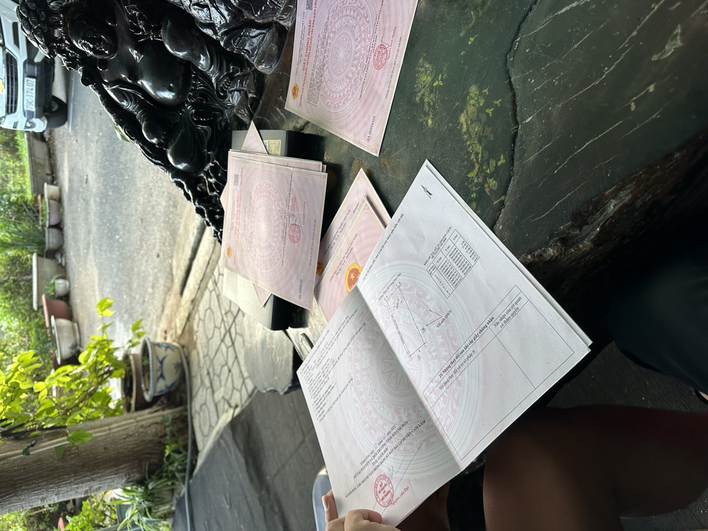

“Đã có quy hoạch rồi anh ạ”: câu hỏi lại duy nhất người mua nên nói — quyết định số mấy, ngày nào
Trong nghề môi giới, có một câu nói rất dễ thốt ra: “khu này có quy hoạch 1/500 rồi”. Nói nhanh, nghe chắc, khách yên tâm. Tôi viết bài này trước hết để tự nhắc mình — vì chính tôi cũng từng suýt nói một câu như vậy khi trong tay chưa cầm văn bản nào. Và để người mua có một câu hỏi lại đơn giản, lịch sự, mà đủ để phân biệt lời nói với giấy tờ.

Ảnh minh hoạ — không liên quan đến khu đất hay dự án nào cụ thể.
Vì sao câu “đã có quy hoạch” dễ nói đến vậy
Vì nó thường không hẳn sai. Hầu như khu đất nào ở Khánh Hoà cũng nằm trong một bản quy hoạch nào đó: quy hoạch tỉnh, quy hoạch chung, quy hoạch phân khu. Người nói có thể đã thấy một tấm bản vẽ, nghe một cuộc họp, hay đọc một bài báo về khu đó. Cái thiếu không phải là thông tin, mà là mức độ: quy hoạch đang ở bước nào — mới là ý định, đang lập, hay đã được ký phê duyệt.
Với người mua, khác biệt giữa các bước đó có thể là vài tháng, có khi vài năm, và có khi là chuyện “được làm gì trên mảnh đất này”.
Ba thứ hay bị gọi chung là “quy hoạch”
| Tên gọi | Nó là gì | Đã đủ để tin chưa |
|---|---|---|
| Chủ trương, kế hoạch | Cơ quan nhà nước định hướng sẽ làm gì với khu đất | Chưa — mới là ý định |
| Nhiệm vụ quy hoạch | Đề bài cho việc lập quy hoạch: phạm vi, mục tiêu, yêu cầu | Chưa — mới có đề bài, chưa có bản vẽ được duyệt |
| Đồ án quy hoạch đã phê duyệt | Bản vẽ và quy định cụ thể, có quyết định phê duyệt của cơ quan có thẩm quyền | Đây mới là thứ có giá trị áp dụng |
Giữa nhiệm vụ và đồ án đã phê duyệt còn các bước lập hồ sơ, lấy ý kiến, thẩm định. Mỗi bước là một văn bản riêng, có số, có ngày.
Một ví dụ công khai: lịch từng bước của một khu đất
Báo Khánh Hoà ngày 9/11/2026 đưa tin về việc đẩy nhanh đấu giá 16 khu đất của tỉnh, theo Thông báo kết luận số 895 ngày 2/11/2026 của UBND tỉnh (nguồn: Báo Khánh Hoà, 9/11/2026). Bài báo ghi rõ với khu đất Kho cảng Bình Tân (phường Nha Trang): hiện chưa có quy hoạch 1/500, và tỉnh ấn định lịch như sau:
- Phường duyệt nhiệm vụ quy hoạch chi tiết trước 8/11.
- Hoàn thành hồ sơ đồ án trước 15/11.
- Thẩm định, phê duyệt trước 30/11.
- Đấu giá dự kiến tháng 1/2027.
Cùng bài báo, một khu đất khác — Làng biển Nha Trang — được ghi là đã có quy hoạch 1/500, nhưng việc bàn giao đất vẫn đang làm, đấu giá chậm nhất quý I/2027.
Hai ví dụ này cho thấy hai điều. Thứ nhất, “có quy hoạch” và “chưa có quy hoạch” được báo chí và cơ quan nhà nước phân biệt rất rõ, theo từng bước. Thứ hai, ngay cả khi đã có quy hoạch 1/500, chặng đường tới lúc đất sẵn sàng vẫn còn những bước khác. Đây là lịch ấn định trong thông báo kết luận; tôi chưa thấy văn bản xác nhận các mốc đã hoàn thành, nên chỉ dùng nó làm ví dụ về trình tự, không làm căn cứ cho giao dịch nào.
“Đã có quy hoạch” là một câu nói. “Quyết định số…, ngày…, do … ký” mới là một sự thật kiểm tra được.
Câu hỏi lại: quyết định số mấy, ngày nào, ai ký
Khi nghe “khu này có quy hoạch rồi”, người mua không cần tranh luận, cũng không cần nghi ngờ người nói. Chỉ cần hỏi lại, nhẹ nhàng:
- Quyết định phê duyệt số mấy?
- Ký ngày nào?
- Cơ quan nào ký? (UBND tỉnh, UBND phường, xã, hay cơ quan khác — tuỳ cấp và loại quy hoạch)
- Là quy hoạch tỷ lệ nào, và lô của mình nằm ở ô chức năng nào?
Người nắm chắc sẽ trả lời được ngay, hoặc hẹn gửi bản chụp văn bản. Nếu câu trả lời là “nghe bên dự án nói”, “sắp duyệt rồi”, “trên app thấy có” — thì đó là thông tin cần kiểm tra thêm, chưa phải căn cứ.
Có số quyết định rồi, kiểm tra ở đâu? Tôi thường đi theo thứ tự: tra cổng thông tin, ứng dụng quy hoạch của tỉnh để xem sơ bộ; tìm văn bản quyết định đã được công bố công khai; và chắc nhất là nộp hồ sơ xin văn bản cung cấp thông tin quy hoạch cho đúng thửa đất tại cơ quan quản lý — thường mất khoảng 5–15 ngày làm việc. Đây là bước 4 trong quy trình năm bước tôi đã viết ở bài kiểm tra quy hoạch trước khi xuống tiền.
Xin thêm ba điểm trừ
Câu hỏi thứ hai tôi muốn người mua mang theo: khi người tư vấn chỉ nói điểm tốt, hãy xin thêm ba điểm trừ.
Không có khu đất nào không có điểm trừ: đường vào hẹp, đang chờ phê duyệt, hướng nắng, thời gian bàn giao, mật độ xây dựng thấp hơn mong muốn… Người làm nghề tử tế đã tự tìm ra những điểm đó trước khi giới thiệu, nên sẽ có sẵn câu trả lời. Nếu người tư vấn lúng túng hoặc nói “không có điểm trừ nào đâu”, đó cũng là một thông tin.
Với riêng tôi, đây là một nguyên tắc tôi đang cố giữ: nói thật cả điều bất lợi cho việc bán. Không phải vì nó nghe hay, mà vì nếu sau này khách tự phát hiện điểm trừ mà mình không nói, niềm tin mất đi khó lấy lại hơn bất kỳ giao dịch nào.
Điều tôi tự sửa ở chính mình
Tôi từng suýt nói “đã có quy hoạch” với một sự tự tin mà khi về soát lại, tôi không có văn bản nào trong tay để chứng minh. Không có hậu quả gì, nhưng nó đủ để tôi đặt cho mình ba quy tắc:
- Không dùng chữ “đã có quy hoạch” nếu không đọc được số quyết định.
- Thông tin nghe từ cuộc họp, từ bài báo, từ người trong nghề — ghi rõ là “nghe”, kèm nguồn và ngày.
- Mỗi khu đất giới thiệu cho khách đều đi kèm ít nhất ba điểm trừ tôi tự tìm ra.
Viết ra thì dễ, giữ được mới khó. Nhưng khi người mua cũng biết hỏi lại đúng câu, thì cả người bán lẫn người môi giới đều phải làm bài kỹ hơn — và đó là điều tốt cho cả thị trường.
Thông tin về Kho cảng Bình Tân và Làng biển Nha Trang lấy từ bài “Đẩy nhanh tiến độ đấu giá các khu đất” của Báo Khánh Hoà (9/11/2026), tổng hợp từ Thông báo kết luận số 895 ngày 2/11/2026 của UBND tỉnh; đây là lịch ấn định, chưa phải xác nhận đã hoàn thành. Muốn dùng mốc cụ thể cho giao dịch, cần đối chiếu thông báo chính thức của cơ quan có thẩm quyền. Bài không phải tư vấn pháp lý và không khuyến nghị mua hay bán bất động sản nào.
“Rồi, ngày mới tốt lành nhé.”
Sống tử tế · Kiếm tiền hạnh phúc · Cho đi giá trị
Đang nghe “khu này có quy hoạch rồi”?
Gửi tôi vị trí hoặc số thửa, tờ bản đồ — tôi cùng anh chị tìm xem đang ở bước nào, văn bản nào cần xin, và ba điểm trừ cần biết trước khi đặt cọc. Nhắn “QUY HOẠCH” qua Zalo.
Nhắn Zalo — 0869 668 638